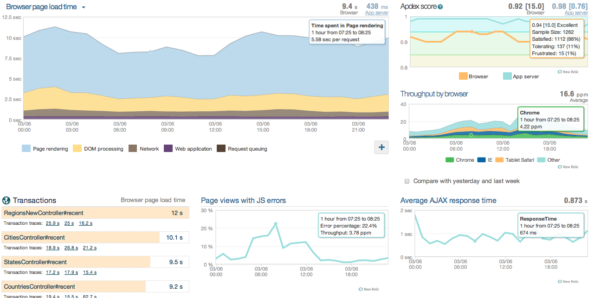
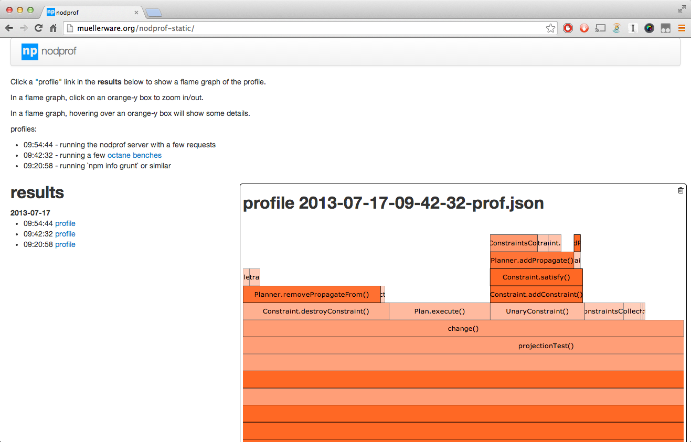

# debugging node ### tips and tools for debugging your node programs Patrick Mueller - IBMer - [`@pmuellr`](https://twitter.com/pmuellr) - [`muellerware.org`](http://muellerware.org) .smaller[.smaller[ <http://pmuellr.github.io/slides/2014/04-debugging-node> <http://pmuellr.github.io/slides/2014/04-debugging-node/snippets.html> (code snippets) ]] .no-print.smaller[.smaller[ <!-- [{pdf}](index.pdf) --> ]] --- layout: true <div class="page-icon"> <img id="ibm-8-bar-icon" height=24 src="../../images/ibm-8-bar-trans.png"> <img height=24 src="../../images/js.png"> </div> --- ## Patrick Mueller developer advocate at IBM Raleigh, NC more of my slides: <http://pmuellr.github.io/slides> <style> #display-ratio-value, #clicker-value { padding-right: 1em; text-align: right; } </style> <div class="no-print"> <hr> <table id="config-table" cellspacing=0 cellpadding=3> <tr> <td>display ratio: <td id="display-ratio-value"> <td><span style="width:20em"> </span> <td><button id="button-display-ratio-4">set to 4:3</button> <td><button id="button-display-ratio-16">set to 16:9</button> <tr> <td>clicker mode: <td id="clicker-value"> <td><span style="width:20em"> </span> <td><button id="button-clicker-on">set on</button> <td><button id="button-clicker-off">set off</button> </table> </div> --- ## what is BlueMix? <img src="../../images/bluemix.png" width=256 style="float: right"> Platform-as-a-Service product. Runs node apps! Runs any apps! Based on the [Cloud Foundry](http://cloudfoundry.org) open source project For more info: <https://bluemix.net> For more info on node on BlueMix: > <http://node-stuff.ng.bluemix.net> --- class: center, middle ## The most effective debugging tool is still careful thought, coupled with judiciously placed print statements. -- Brian Kernighan, "Unix for Beginners" (1979) --- class: center, middle # logging --- ## `alert()` ```js //!snippet: alert.js ``` --- ## `console.log()` ```js //!snippet: console_log.js ``` --- ## `console.time()` ```js //!snippet: console_time.js ``` --- ## `console.trace()` ```js //!snippet: console_trace.js ``` --- ## npm `debug` ```js //!snippet: debug.js ``` <pre><code>> DEBUG=* node debug.js <span style="color:#0A0">thing-B</span> churning <span style="color:#0A0">+0ms</span> <span style="color:#00A">thing-A</span> thrashing <span style="color:#00A">+0ms</span> <span style="color:#0A0">thing-B</span> churning <span style="color:#0A0">+339ms</span> <span style="color:#00A">thing-A</span> thrashing <span style="color:#00A">+501ms</span> <span style="color:#0A0">thing-B</span> churning <span style="color:#0A0">+333ms</span> <span style="color:#0A0">thing-B</span> churning <span style="color:#0A0">+334ms</span> <span style="color:#00A">thing-A</span> thrashing <span style="color:#00A">+502ms</span> ... </code></pre> --- ## npm `winston` ```js //!snippet: winston.js ``` --- class: center, middle # error handling --- ## builtin `process` events ```js //!snippet: process-events.js ``` --- ### `Error.prepareStackTrace()` - before ```js //!snippet: v8_prepareStackTrace-before.js ``` --- ### `Error.prepareStackTrace()` - after ```js //!snippet: v8_prepareStackTrace-after.js ``` --- ## `Error.prepareStackTrace()` see also: * .smaller[<https://code.google.com/p/v8/wiki/JavaScriptStackTraceApi>] * .smaller[.smaller[<https://mail.mozilla.org/pipermail/es-discuss/2014-March/036764.html>]] --- ### npm `long-stack-traces` - before ```js //!snippet: long-stack-traces-before.js ``` --- ### npm `long-stack-traces` - after ```js //!snippet: long-stack-traces-after.js ``` --- ### npm `Q.longStackSupport` - before ```js //!snippet: q-longStack-before.js ``` --- ### npm `Q.longStackSupport` - after ```js //!snippet: q-longStack-after.js ``` --- class: center, middle # early warning systems --- ## testing ```js //!snippet: testing.js ``` --- ## testing * mocha - <http://visionmedia.github.io/mocha/> * jasmine - <http://jasmine.github.io> --- ## linting <pre><code>> <span style="color:#00A;">jshint snippets/*.js</span> snippets/alert.js: line 1, col 17, Missing semicolon. snippets/console_log.js: line 1, col 19, Missing semicolon. snippets/console_log.js: line 4, col 26, Missing semicolon. snippets/console_log.js: line 7, col 25, Missing semicolon. snippets/console_log.js: line 10, col 35, Missing semicolon. snippets/console_log.js: line 13, col 21, Missing semicolon. snippets/console_time.js: line 1, col 20, Missing semicolon. snippets/console_time.js: line 2, col 10, Missing semicolon. snippets/console_time.js: line 3, col 23, Missing semicolon. snippets/console_time.js: line 8, col 21, Missing semicolon. snippets/console_time.js: line 13, col 34, Missing semicolon. snippets/console_trace.js: line 1, col 19, Missing semicolon. snippets/console_trace.js: line 2, col 19, Missing semicolon. ... repeats ad nauseum ... </code></pre> --- ## linting * jshint - <http://jshint.com/> * jslint - <http://jslint.com/> --- class: center, middle # etc --- ## builtin module `repl` ```js //!snippet: repl.js ``` --- ## builtin debugger ```js //!snippet: debugger.js ``` --- ## builtin debugger <table> <tr> <td valign="top" width="50%"> <pre><code style="font-size:60%">> node debug debugger.js < debugger listening on port 5858 connecting... ok ... debug> <span style="color:#00A;">watch("x")</span> debug> <span style="color:#00A;">cont</span> break in debugger.js:2 Watchers: 0: x = undefined 1 function a() { 2 <span style="color:#0A0">debugger</span> 3 var x = 1 4 var y = 2 debug> <span style="color:#00A;">next</span> </code></pre> <td valign="top" width="50%"> <pre><code style="font-size:60%">... debug> <span style="color:#00A;">next</span> break in debugger.js:4 Watchers: 0: x = 1 2 debugger 3 var x = 1 4 <span style="color:#0A0">var</span> y = 2 5 console.log(x + " + " ... 6 } debug> <span style="color:#00A;">cont</span> < 1 + 2 = 3 program terminated debug> </code></pre> </table> --- ## npm `hooker` ```js //!snippet: hooker.js ``` --- ## npm `hooker` prints: ``` -> Math.max: [5,6,7] <- Math.max: 7 -> Math.sqrt: [2] <- Math.sqrt: 1.4142135623730951 ``` also provides * filtering arguments * overriding results * https://github.com/cowboy/javascript-hooker --- ## node 0.12 module `tracing` ```js //!snippet: node-12-tracing.js ``` --- ## node 0.12 module `tracing` ```js // prints: // // before: [object Timer] // before: [object Object] // after: [object Object] // after: [object Timer] // before: [object Timer] // before: [object Object] // after: [object Object] // after: [object Timer] ... ``` spartan! lots of low hanging fruit to pick! --- ## node 0.12 module `tracing` * <http://nodejs.org/dist/v0.11.13/docs/api/tracing.html> * allows userdata to be associated with a handler * has event emitter `v8` which emits GC information --- class: center, middle # tools --- ## node-inspector * reuses the user interface from Chrome Dev Tools * set breakpoints * watch expressions * <https://github.com/node-inspector/node-inspector> ``` sudo npm -g install node-inspector ... node-debug program.js ``` just for fun, try ``` node-debug `which node-debug` ``` --- --- ## IDEs * Eclipse - .smaller[<https://github.com/joyent/node/wiki/using-eclipse-as-node-applications-debugger>] * WebStorm - <http://www.jetbrains.com/webstorm/> * Cloud9 IDE - <https://c9.io/> --- ## newrelic * framework specific timing for: * express, connect, hapi, restify * mongodb, redis, mysql, memcached * add your own: .smaller[<https://docs.newrelic.com/docs/nodejs/nodejs-agent-api>] * unhandled exceptions * works locally and on a server --- ## newrelic * get account key from newrelic * `npm install newrelic` * `cp node_modules/newrelic/newrelic.js .` * `edit newrelic.js`, add account key * add `require('newrelic')` to start of your app * start app * watch monitoring dashboard at newrelic more info: <https://docs.newrelic.com/docs/nodejs/> movie: .smaller[<https://www.youtube.com/watch?v=EA5yVDVr3K0>] ---  --- ## nodprof ``` nodprof --serve --port 8081& open http://localhost:8081 ... nodprof `which npm` info grunt ``` sample: http://muellerware.org/nodprof-static/ for more info: * <https://github.com/pmuellr/nodprof> * .smaller[.smaller[<https://code.google.com/p/v8/source/browse/trunk/include/v8-profiler.h>]] * other profilers ---  --- class: center, middle # `fin`